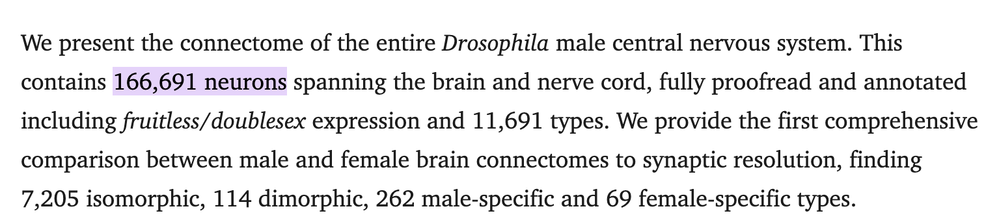

Neuron
a nerve cell
IT 1020SEF · Team P3-3 · No. 4 · 17 November 2026
Tutor: Dr Dani
One male fly: brain and nerve cord · MaleCNS v1.0 · drag to turn
…and did you hit it?
The fly is not lucky. The fly is wired.
a nerve cell
the contact where one neuron passes a signal to the next
the wiring diagram of all those cells and contacts
A map shows
which stations connect
A map does not show
where the trains are now
MRI → regions
Connectome → wires
Why a fly? A human brain is too big to map this way today. The fly's map is finished.
What a
connectome is
This map:
166,691 neurons
Its five
parts
Same in
both sexes?
How it
was built
Open it
tonight
From an eye to a leg, and then to your own laptop.
One adult male fruit fly · 2026
166,691
neurons
The published shapes · MaleCNS v1.0
In IT terms, a dataset: neuron = record · connection = link

Berg et al., Cell, 2026
Abstract as posted with the preprint of the same study (Berg et al., 2025) · Also on the Google Research blog, 3 September 2026
2024 · female
139,255 neurons
Brain only. No nerve cord.
2026 · male
166,691 neurons
Brain + nerve cord, joined.
Compare them. Never glue them into one body.
receives light and images
decision and memory
joins the brain to the nerve cord
like a spinal cord: legs and wings
nerve impulse becomes movement
Map stops here:
which muscle?
Nobody knows.
EYE → BRAIN → NECK → CORD → LEG
A signal can be followed all the way.
The first full comparison of a male and a female brain, synapse by synapse. One square = one cell type.
A jump model on the male brain shell. The microscope images are not in it. Click a cell.
see a dark shape getting bigger
6765636362615958 synapses ↓
carries it through the neck
70 synapses ↓
kicks the middle leg
Shared by both sexes
Acetylcholine at every step, so the signals add. The game is a model of these ten cells, not a recording.
a single male fly
wiring, not activity
a different brain
Human brain: about 86 billion neurons
not mapped this way
The IT story
Stage 1 of 4 · Input
≈ 160 teravoxels = 160 trillion 3D pixels
Stage 2 of 4 · Processing
Flood-filling network · one voxel → one whole neuron
Then it finds the synapses
≈ 46 million sending sites
≈ 312 million receiving sites
Stage 2 of 4 · Checking the draft
one cell cut into two pieces
two cells stuck together as one
Then people proofread.
Humans check the draft and fix it.
Stage 4 of 4 · Service
Stage 4 of 4 · Service
Where do I get it?
male-cns.janelia.org
front door and download
What does it look like?
the neurons in 3D
Who connects to whom?
dataset male-cns:v1.0
a public query service
Giant fiber → TTMn?70 synapses
On the market
brain + nerve cord in one map: eye to leg
for the first time, synapse by synapse
free, checkable, tonight
Next time a fly escapes your hand: you lost to a wiring diagram.
Team P3-3 · IT 1020SEF · 17 November 2026
Chloe P. · Lily · Alex · Austin · Gordon · Chloe K.
Turn your phone sideways for a bigger view